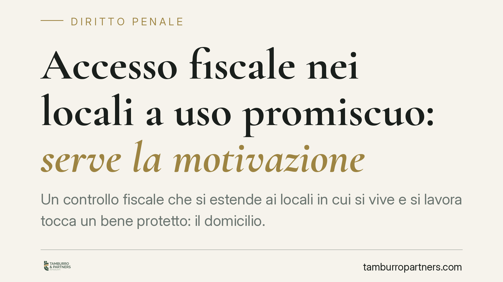

Accesso fiscale nei locali a uso promiscuo: serve la motivazione
Un controllo fiscale che si estende ai locali in cui si vive e si lavora tocca un bene protetto: il domicilio. Quando l'accesso avviene in ambienti a uso promiscuo senza una motivazione specifica dell'autorizzazione, si apre un doppio fronte: l'utilizzabilità delle prove nel giudizio interno e la tutela convenzionale ex art. 8 CEDU. Vediamo cosa cambia per il professionista con studio in casa.

Il fatto e perché conta
Il tema torna d'attualità perché la Corte europea dei diritti dell'uomo esamina ricorsi contro l'Italia in cui l'accesso della Guardia di Finanza a locali abitativi, disposto senza motivazione specifica, viene contestato come violazione del diritto al rispetto del domicilio (art. 8 CEDU).
Precisazione doverosa: gli estremi della singola pronuncia citata nelle sintesi divulgative (caso, numero di ricorso, data di deposito) vanno verificati sul database ufficiale HUDOC della Corte prima di darli per acquisiti. Non presentiamo qui una condanna come un fatto definitivo e consolidato: ragioniamo sul principio giuridico, che è solido a prescindere dalla singola decisione.
Inquadramento normativo
L'art. 52 del DPR 633/1972 disciplina gli accessi, ispezioni e verifiche in materia IVA (richiamato anche ai fini delle imposte dirette). La norma distingue due situazioni:
- Locali a uso esclusivamente commerciale, professionale o produttivo: l'accesso dei verificatori richiede l'autorizzazione del capo dell'ufficio.
- Locali adibiti anche ad abitazione (uso promiscuo) o che sono esclusivamente abitazione: serve l'autorizzazione del Procuratore della Repubblica. Per i locali esclusivamente abitativi occorrono inoltre gravi indizi di violazione.
Il punto critico è la motivazione di quell'autorizzazione. Un provvedimento che si limita a richiamare l'uso promiscuo, senza esplicitare le ragioni concrete dell'ingresso in un ambiente domestico, è un atto che incide sull'inviolabilità del domicilio (art. 14 Cost. e art. 8 CEDU) senza il necessario bilanciamento. L'art. 8 CEDU tutela il domicilio anche nella sua dimensione professionale, come la giurisprudenza di Strasburgo riconosce da tempo (tra le altre, *Niemietz c. Germania*, 1992).
I due piani: utilizzabilità e risarcimento
È essenziale tenere distinti due profili.
Piano interno (penale e tributario) – utilizzabilità delle prove. Sul fronte nazionale, parte della giurisprudenza di legittimità ritiene che l'illegittimità dell'autorizzazione all'accesso possa riflettersi sull'utilizzabilità del materiale probatorio raccolto. L'orientamento non è però uniforme: la Cassazione distingue, caso per caso, tra vizi dell'autorizzazione e conseguenze sulla prova, e talvolta valorizza la buona fede dei verificatori. Chi voglia far valere questo profilo in sede penale o tributaria deve verificare lo stato attuale della giurisprudenza sul proprio caso, senza assumere un esito scontato.
Piano europeo – risarcimento del danno morale. Davanti alla Corte EDU non si discute l'utilizzabilità della prova, ma la violazione del diritto convenzionale. In caso di accertata violazione dell'art. 8, la Corte può riconoscere un'equa soddisfazione (art. 41 CEDU), che comprende anche il danno morale. Sono due rimedi diversi, con presupposti e obiettivi distinti: non si escludono, ma non vanno confusi.
Implicazioni pratiche per chi lavora in casa
Il destinatario tipico è il professionista o il piccolo imprenditore con studio o ufficio nella propria abitazione. Per lui, un accesso non adeguatamente autorizzato non è una questione teorica: tocca sia le prove che possono finire in un accertamento o in un procedimento penale (ad esempio per dichiarazione fraudolenta), sia la sfera personale, perché l'ingresso riguarda la casa in cui vive.
Attenzione ai tempi. Il ricorso individuale alla Corte EDU (artt. 34-35 CEDU) va proposto entro quattro mesi dalla decisione interna definitiva. Il termine, prima di sei mesi, è stato ridotto a quattro dal Protocollo 15, in vigore per l'Italia dal 1° febbraio 2022. È un termine di decadenza: superarlo chiude definitivamente l'accesso a Strasburgo.
Cosa fare in concreto
- Chiedete e conservate copia dell'autorizzazione all'accesso: verificatene l'autorità emittente (capo ufficio o PM) e, soprattutto, la presenza di una motivazione specifica.
- Fate verbalizzare eventuali contestazioni al momento dell'accesso, annotando l'uso promiscuo dei locali e le modalità dell'intervento.
- Valutate il profilo interno (eccezione di inutilizzabilità nel giudizio tributario o penale) con un difensore, senza darne per scontato l'esito.
- Esaurite i rimedi interni prima di pensare a Strasburgo: il ricorso CEDU presuppone il previo esaurimento delle vie nazionali.
- Calcolate subito il termine dei quattro mesi dalla decisione interna definitiva, per non perdere la via convenzionale.
Consigliamo di non attendere l'esito dell'accertamento per impostare la strategia difensiva: le scelte sul materiale probatorio e sui termini vanno ponderate fin dai primi atti.
---
Contributo informativo a cura di Tamburro & Partners - Avv. Giuseppe Tamburro. Non costituisce parere legale.
Ogni condominio ha una storia a sé.
Se gestisci un'amministrazione e vuoi un confronto su una specifica questione condominiale, scrivi allo studio. Ti rispondiamo entro un giorno lavorativo.